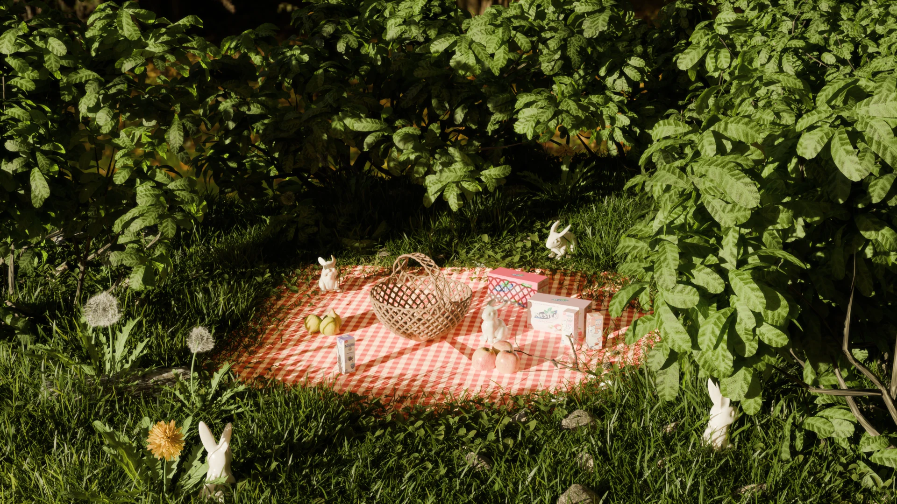
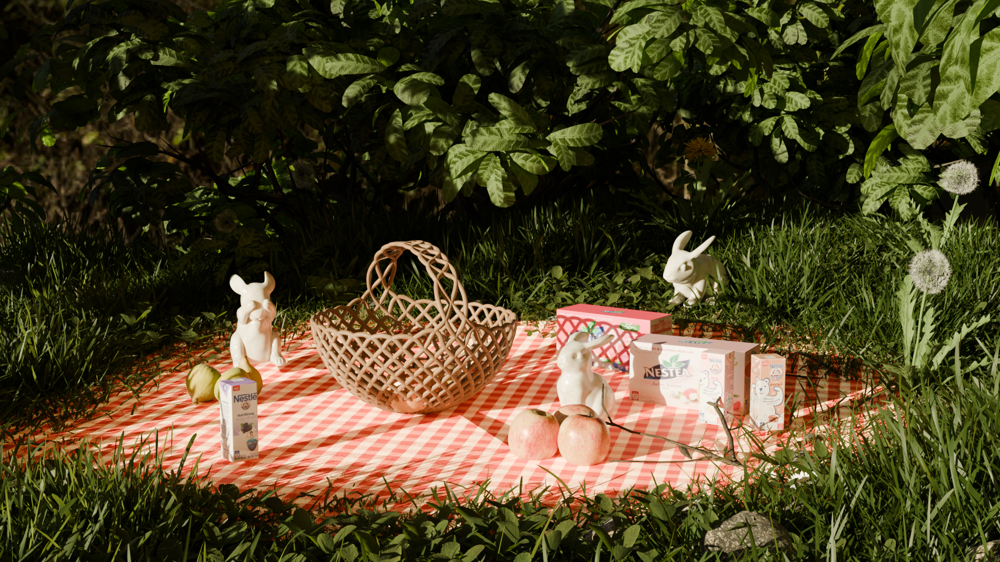

Selected work / 072026
Self initiated
Secret Picnic
A self initiated 3D artwork inspired by a dream I wanted to bring to life through digital world building. I combined existing assets with my own modelling to create a composed, story led environment.

About the project
My contribution
- Built a garden scene around a quiet, dreamlike picnic.
- Composed the environment and brought the story together through light, foliage and objects.
- Combined existing assets with original modelling.
Focus & tools
Blender · 3D composition · Environment building
